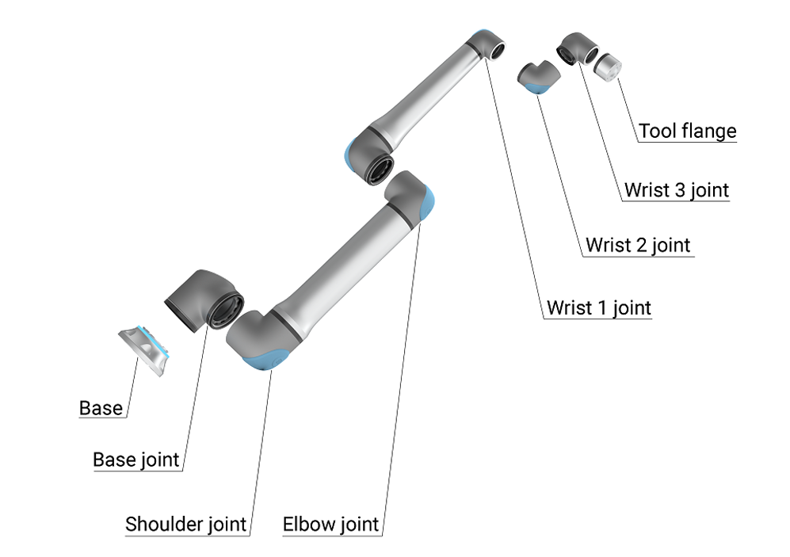
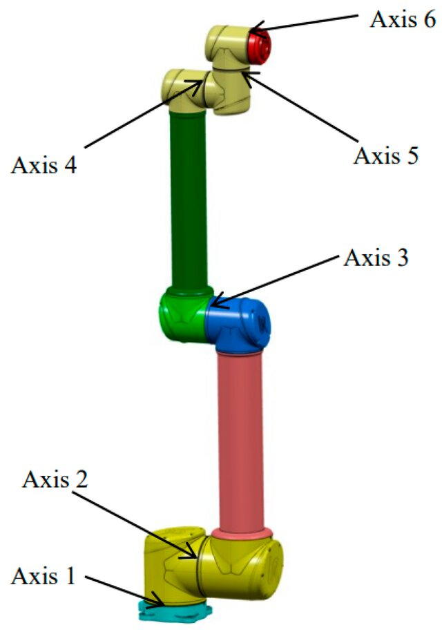
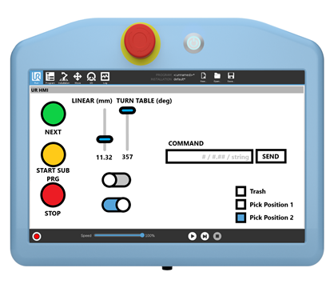

Robot Arm
Six rotary joints — base, shoulder, elbow, wrist 1, wrist 2, wrist 3. Tools mount to the flange on wrist 3.
 TH OWL Robo Lab
UR10e · Architecture & Robotics
TH OWL Robo Lab
UR10e · Architecture & Robotics
Beginner's Kit · v1
A centralised hub for students and researchers working with the UR10e, computer vision, and AI at TH OWL. Workshop or semester project — start here, and you'll be controlling the robot before the end of the session.
The Robot
The UR10e is a 6-axis collaborative robot (cobot) designed to work alongside humans. 10 kg payload, 1300 mm reach, programmable via the Teach Pendant (PolyScope) or remotely over RTDE from Python.



Six rotary joints — base, shoulder, elbow, wrist 1, wrist 2, wrist 3. Tools mount to the flange on wrist 3.
The brain: safety controller, IO board, and the Ethernet interface you'll target from Python.
12-inch touchscreen for jogging, scripting, and switching to Remote Control. Hosts the red E-Stop.
From zero to a verified move
Five steps. Do them in order — most failures are skipped steps.
robot-wifi. Get the UR10e's IP from the Teach Pendant (☰ → About).git clone https://github.com/ineedabetterusrname/THOWL_RoboLab.git
cd THOWL_RoboLab
pip install ur_rtde opencv-python numpyUR10e_Documentation/Python_Template/ur10e_basic_template.py and set ROBOT_IP.What you need
Python 3.10+ recommended. Most projects pin their own requirements.txt.
| Tool | Used for | Install |
|---|---|---|
| Python 3.10+ | All control scripts | python.org/downloads |
| ur_rtde | Talking to the UR10e over RTDE | pip install ur_rtde |
| OpenCV | Camera I/O, calibration, AprilTag | pip install opencv-python |
| Mediapipe | Hand tracking for the Interactive Robot project | pip install mediapipe |
| PyBullet | Physics simulation before touching the real robot | pip install pybullet |
| Rhino 7+ & Grasshopper | Lab cell model, toolpath planning | Licence from TH OWL IT |
Where to go next
Each is a self-contained folder with its own README. Start with the Python Template; jump to whichever project matches your semester project.
Connect to the robot, run one move, confirm everything. Use this to verify your setup before tackling a real project.
Gesture teleoperation with Mediapipe + PyBullet. Switch between simulation and the real robot.
OpenCV + AprilTag pipeline for the lab's Tapo C110 cameras. World-coordinate calibration for pick targets.
"Cloud-brain, edge-body" Gemini-driven pick system on the IMX500 + Raspberry Pi Zero 2 W.
For students
If you worked on something in the lab — document it here so the next cohort can build on it.
Create a new folder under Projects/ named after your task. Keep code, models, and notes together.
Every project ships a README.md explaining how to install dependencies, configure the IP, and run it from cold.
Never commit passwords or real IPs to GitHub. Use placeholders like YOUR_IP and a local .env.